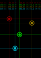

WBBMTT: Web Browser Based Multi-Touch screen Test
Touch Tester

Start (with default setup)
This tool WBBMTT is yet another multi-touch screen test program implemented for HTML5 Web browser.
Android application YAMTT (Yet Another MultiTouch Test,
Google Play Store,
dev blog )
influences for basic functionality and graphic design of WBBMTT.
Thanks for good tool. I want iOS equivalent of that. So I write this.
vertical-align:top;
WBBMTT source code is hosted at github.
Online application is available with GitHub Pages at https://naqtn.github.io/WBBMTT (QR code links here)